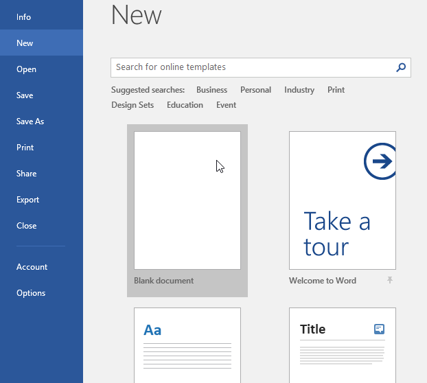
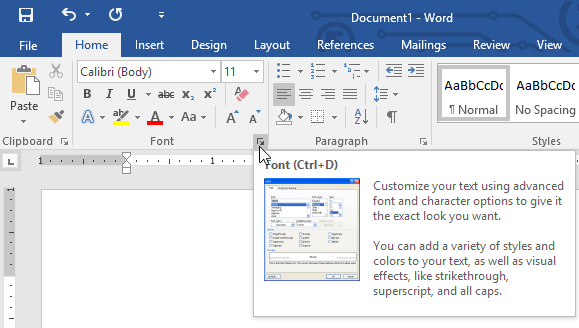
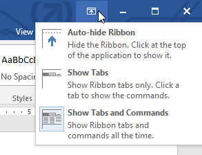
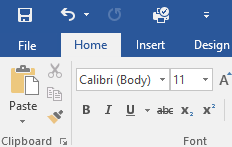
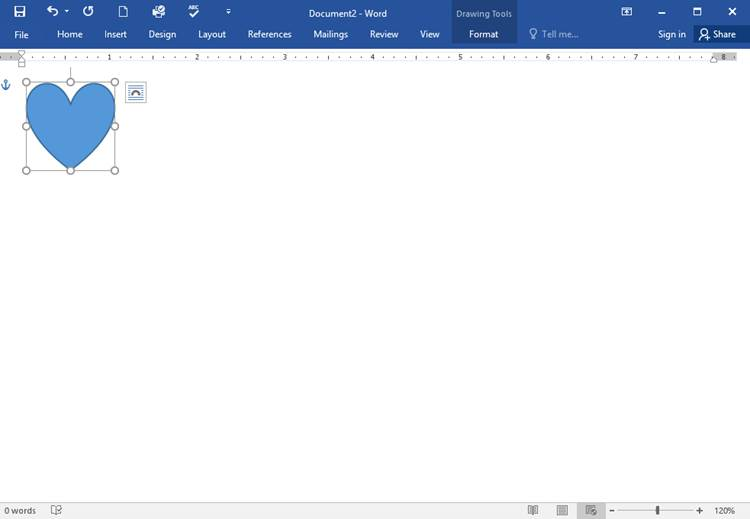

Tentang tutorial ini
Prosedur dalam tutorial ini akan berfungsi untuk semua versi terbaru Microsoft Word. termasuk Word 2019. Word 2016. dan Office 365. Mungkin ada sedikit perbedaan, tetapi sebagian besar versi ini serupa. Namun, jika Anda menggunakan versi yang lebih lama. Anda mungkin ingin merujuk ke salah satu tutorial Word kami yang lain.
Antarmuka Word
Saat Anda membuka Word untuk pertama kalinya, Layar Mulai akan muncul. Dari sini, Anda dapat membuat dokumen baru. memilih template. dan mengakses dokumen yang baru saja diedit. Dari Layar Mulai. cari dan pilih Dokumen kosong untuk mengakses antarmuka Word.

Klik tombol di interaktif di bawah ini untuk mempelajari lebih lanjut tentang antarmuka Word.

Bekerja dengan lingkungan Word
Semua versi terbaru Word menyertakan Ribbon dan Quick Access Toolbar. tempat Anda akan menemukan perintah untuk melakukan tugas umum di Word, serta tampilan Backstage.
Pita
Word menggunakan sistem pita tab alih-alih menu tradisional. The Ribbon berisi beberapa tab. yang dapat Anda temukan di dekat bagian atas jendela Word.

Setiap tab berisi beberapa kelompok perintah terkait. Misalnya, grup Font pada tab Beranda berisi perintah untuk memformat teks dalam dokumen Anda.

Beberapa grup juga memiliki panah kecil di sudut kanan bawah yang dapat Anda klik untuk opsi lainnya.

Menampilkan dan menyembunyikan Pita
Jika Anda menemukan bahwa Ribbon memakan terlalu banyak ruang layar, Anda dapat menyembunyikannya. Untuk melakukan ini, klik panah Opsi Tampilan Pita di sudut kanan atas Pita, lalu pilih opsi yang diinginkan dari menu tarik-turun:

Pita Sembunyikan Otomatis : Sembunyikan otomatis menampilkan dokumen Anda dalam mode layar penuh dan sepenuhnya menyembunyikan Pita dari pandangan. Untuk menampilkan Ribbon, klik perintah Expand Ribbon di bagian atas layar.
Tampilkan Tab : Opsi ini menyembunyikan semua grup perintah saat tidak digunakan, tetapi tab akan tetap terlihat. Untuk menampilkan Pita, cukup klik tab.
Show Tabs and Commands : Opsi ini memaksimalkan Ribbon. Semua tab dan perintah akan terlihat. Opsi ini dipilih secara default saat Anda membuka Word untuk pertama kalinya.
Untuk mempelajari cara menambahkan tab dan perintah khusus ke Pita, tinjau Ekstra kami tentang Menyesuaikan Pita.
Menggunakan fitur Beri tahu saya
Jika Anda kesulitan menemukan perintah yang Anda inginkan, fitur Beritahu Saya dapat membantu. Ini berfungsi seperti bilah pencarian biasa. Ketik apa yang Anda cari, dan daftar opsi akan muncul. Anda kemudian dapat menggunakan perintah langsung dari menu tanpa harus menemukannya di Ribbon.

Bilah Alat Akses Cepat
Terletak tepat di atas Ribbon, Quick Access Toolbar memungkinkan Anda mengakses perintah umum apa pun tab yang dipilih. Secara default, ini menunjukkan perintah Save. Undo. dan Redo. tetapi Anda dapat menambahkan perintah lain tergantung pada kebutuhan Anda.
Untuk menambahkan perintah ke Bilah Alat Akses Cepat:
Klik panah tarik-turun di sebelah kanan Bilah Alat Akses Cepat.

Pilih perintah yang ingin Anda tambahkan dari menu.

Perintah akan ditambahkan ke Quick Access Toolbar.

Penggaris
The R uler terletak di bagian atas dan di sebelah kiri dokumen Anda. Itu membuatnya lebih mudah untuk menyesuaikan dokumen Anda dengan presisi. Jika mau, Anda dapat menyembunyikan Penggaris untuk membuat lebih banyak ruang layar.
Untuk menampilkan atau menyembunyikan Penggaris:
Klik tab Lihat.

Klik kotak centang di sebelah Ruler untuk menampilkan atau menyembunyikan Ruler.

Tampilan belakang panggung
Tampilan Backstage memberi Anda berbagai pilihan untuk menyimpan, membuka file, mencetak, dan berbagi dokumen Anda. Untuk mengakses tampilan Backstage, klik tab File pada Ribbon.

Klik tombol di interaktif di bawah ini untuk mempelajari lebih lanjut tentang menggunakan tampilan Backstage.

Tampilan dokumen dan zoom
Word memiliki berbagai opsi tampilan yang mengubah cara dokumen Anda ditampilkan. Anda dapat memilih untuk melihat dokumen Anda dalam Mode Baca. Tata Letak Cetak. atau Tata Letak Web. Tampilan ini dapat berguna untuk berbagai tugas, terutama jika Anda berencana untuk mencetak dokumen. Anda juga dapat memperbesar dan memperkecil untuk membuat dokumen Anda lebih mudah dibaca.
Beralih tampilan dokumen
Beralih di antara tampilan dokumen yang berbeda itu mudah. Cukup cari dan pilih perintah tampilan dokumen yang diinginkan di sudut kanan bawah jendela Word.
Read Mode : Tampilan ini membuka dokumen ke layar penuh. Tampilan ini sangat bagus untuk membaca teks dalam jumlah besar atau sekadar meninjau pekerjaan Anda.

Tata Letak Cetak : Ini adalah tampilan dokumen default di Word. Ini menunjukkan seperti apa dokumen itu pada halaman yang dicetak.

Tata Letak Web : Tampilan ini menampilkan dokumen sebagai halaman web, yang dapat membantu jika Anda menggunakan Word untuk menerbitkan konten secara online.

Memperbesar dan memperkecil
Untuk memperbesar atau memperkecil, klik dan seret penggeser kontrol zoom di sudut kanan bawah jendela Word. Anda juga dapat memilih + atau - perintah untuk memperbesar atau secara bertahap. Angka di sebelah penggeser menampilkan persentase zoom saat ini. juga disebut tingkat zoom.

Latihan!
Buka Word. dan buat dokumen kosong.
Ubah Opsi Tampilan Pita menjadi Tampilkan Tab.
Menggunakan Kustomisasi Bilah Alat Akses Cepat. tambahkan Baru. Cetak Cepat. dan Ejaan & Tata Bahasa.
Di bilah Beri tahu saya. ketik Bentuk dan tekan Enter.
Pilih bentuk dari menu, dan klik dua kali di suatu tempat di dokumen Anda.
Tunjukkan Penggaris jika belum terlihat.
Zoom dokumen menjadi 120%.
Ubah tampilan Dokumen menjadi Tata Letak Web.
Setelah selesai, dokumen Anda akan terlihat seperti ini:

Ubah Ribbon Display Options kembali ke Show Tabs and Commands. dan ubah Document View kembali ke Print Layout.